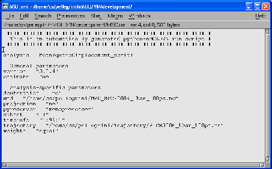

Next: Bibliography
Up: Using nMOLDYN from the
Previous: nMOLDYN autostart files
Contents
nMOLDYN input files
The nMOLDYN input files (extension .nmi) are ASCII files that must be run through nMOLDYN. To run such a file,
just type:
./nMOLDYNStart.py -i file.py on unix
or
nMOLDYNStart.py file.py on Windows
where file.py is the name of the nMOLDYN input file.
An nMOLDYN input file must have the following format:
1. analysis = analysis_name
2. version = "nmoldyn_version"
3. estimate = "no"
4. name1 = value1
5. nameN = valueN
some explanations are necessary about the structure of this file:
- Line 1.: analysis_name is the nMOLDYN internal name of the analysis to run. A comprehensive list of the
nMOLDYN analysis internal names associated to each analysis is showed in Tab. 5.1.
- Line 2.: nmoldyn_version is the version number of nMOLDYN. This line is optional.
- Line 3.: if set to "yes" instead of "no". the analysis will be run in estimate mode (see Section 4.2.3
for details). If "no" the full analysis will be run. If this parameter is omitted, the full analysis will be run.
- Line 4.: name1 is the name in lower case of the first parameters of the analysis with value equal to value1.
Idem for Line 5.. The order in which the parameters appear is not relevant. A comprehensive list of the parameters names and
expected values associated to each analysis can be found using the right column of Tab. 5.1.
The figure 5.2 shows an example of a nMOLDYN input file for the MSD analysis. It was direclty
generated from nMOLDYN GUI. Saving an input file from the GUI (see Section 4.2.3) is often the
easiest way to get such file. This file providing then a convenient starting point for customization.
Figure 5.2:
Example of a nMOLDYN input file derived for a MSD analysis.
|

|
For those familiar with nMOLDYN 2, the nMOLDYN input files are the equivalent of the input file through pMOLDYN.
They have been kept in nMOLDYN 3 for historical reasons even if the authors think that the nMOLDYN autostart are a little
bit more convenient.
Next: Bibliography
Up: Using nMOLDYN from the
Previous: nMOLDYN autostart files
Contents
pellegrini eric
2009-10-06